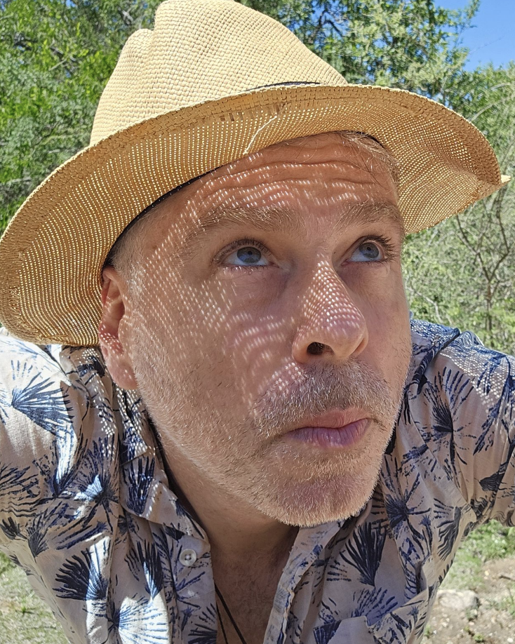

Argentine physicist specializing in Quantum Chaos, Complex Networks, and Quantum Information. Head of the Department of Theoretical Physics at CNEA and Independent Researcher at CONICET.

LEI am an Argentine physicist working at the intersection of quantum mechanics, chaos theory, and complex systems. My research explores how classical chaos manifests in quantum systems and how information propagates through complex networks.
I hold a PhD in Physical Sciences from the Universidad de Buenos Aires (UBA, 2009) and conducted postdoctoral research at the Laboratoire de Physique Théorique (Université Paul Sabatier, Toulouse) in collaboration with Prof. Dima Shepelyansky, with numerous subsequent guest researcher stays.
In 2012 I was a Science writer for Canal Encuentro's "Proyecto G" program (5 episodes, 5M+ YouTube views).
My work spans several interconnected areas of theoretical and computational physics:
Universidad de Buenos Aires · Director: Prof. Marcos Saraceno
Disipación, transporte y localización en cadenas periódicas de mapas cuánticos caóticos
Universidad de Buenos Aires · Director: Prof. Marcos Saraceno
Laboratoire de Physique Théorique, UMR 5152 du CNRS – Université Paul Sabatier, Toulouse, France
Quantum Coherence Group (Prof. D. Shepelyansky)
Recent and selected publications:
PIP:11220210100208CO · Complejidad clásica y cuántica
PICT-2018-02331 · Estudio del Caos y Aplicaciones a Sistemas de Comunicaciones Digitales
Understanding opinion and language dynamics using massive data
PICT-2014-2243 · Transporte y redes complejas
Projet NANOTERRA · Toulouse, France
Buenos Aires, Argentina